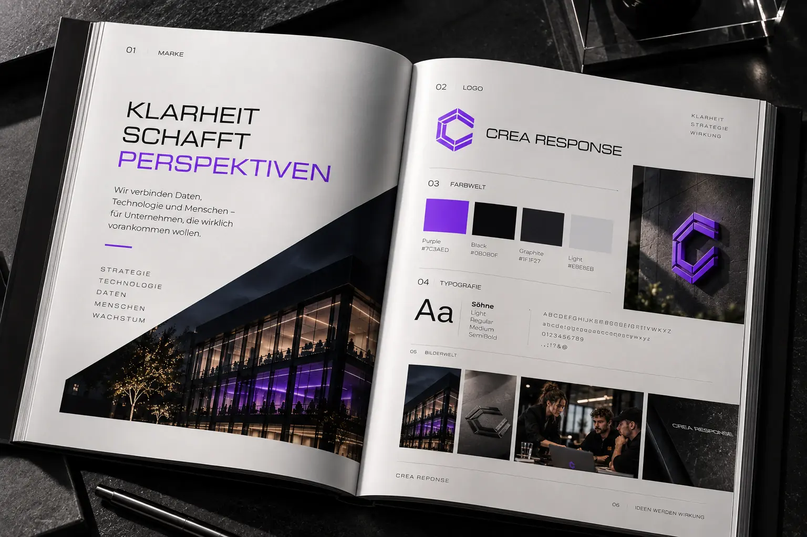

Marken-Wiki › Design › Brand Guidelines, die genutzt werden
Brand Guidelines, die genutzt werden
Gute Guidelines beantworten die Fragen, die im Alltag wirklich gestellt werden – nicht nur die, die Designer:innen interessant finden.
01Definition
Brand Guidelines – auch Markenhandbuch oder Styleguide genannt – beschreiben, wie eine Marke gestaltet und kommuniziert wird. Sie sind das Werkzeug, mit dem Teams, Agenturen und Partner die Marke einheitlich anwenden können.
02Warum viele Guidelines nicht genutzt werden
Viele Handbücher sind schön gestaltet, aber unpraktisch: zu lang, als PDF auf einem Laufwerk versteckt und ohne Antworten auf alltägliche Fragen. Wer schnell eine Präsentation bauen oder einen Social-Post erstellen muss, sucht dort vergeblich nach einer Vorlage.
03Was hineingehört
- Einführung: wofür die Marke steht und wie sie klingt.
- Grundelemente: Logo, Farben, Schrift, Bildstil, Icons.
- Anwendungen: echte Beispiele für Website, Präsentation, Social Media, Print.
- Vorlagen: Dateien zum direkten Weiterarbeiten.
- Häufige Fehler: was ihr nicht tun sollt, mit Beispielen.
- Kontakt: wer bei Fragen hilft.
04Aus der Praxis: Crea Response
Das Brand Book von Crea Response zeigt die wichtigsten Regeln auf wenigen Seiten: Logo, Farbwelt mit Werten, Typografie und Bildwelt. Kurz genug, dass es genutzt wird – konkret genug, dass niemand raten muss.

05Format
Digitale Guidelines – etwa als interne Website – sind leichter zu aktualisieren und zu durchsuchen als PDFs. Wichtig ist, dass sie für alle zugänglich sind, die mit der Marke arbeiten, und dass Downloads direkt neben den Regeln liegen.
06Pflege
Guidelines sind ein Produkt für ihre Nutzer:innen. Fragt das Team regelmäßig, was fehlt, und ergänzt neue Beispiele, sobald neue Formate entstehen. Eine Versionsangabe und ein Änderungsprotokoll helfen, den Überblick zu behalten.
07Checkliste
- Die Guidelines sind für alle erreichbar.
- Sie beantworten die häufigsten Alltagsfragen.
- Zu jeder Regel gibt es ein Beispiel.
- Vorlagen liegen direkt bei den Regeln.
- Es gibt eine verantwortliche Person für Aktualisierungen.
08Fazit
Guidelines werden genutzt, wenn sie kurz, konkret und erreichbar sind. Weniger Regeln, die jede:r kennt, sind besser als hundert Seiten, die niemand öffnet.
09Häufige Fragen
Wie umfangreich sollten Guidelines sein?
So kurz wie möglich. Lieber zwanzig nützliche Seiten als hundert, die niemand liest.
Brauchen kleine Unternehmen Guidelines?
Eine kompakte Version ja – spätestens, wenn mehr als eine Person Inhalte erstellt.